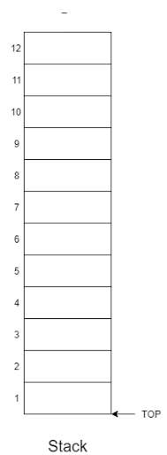
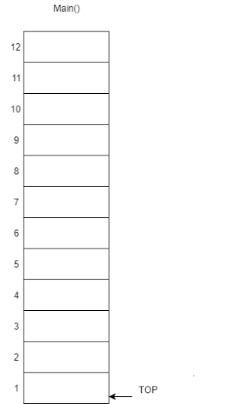
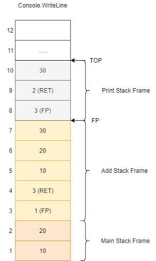
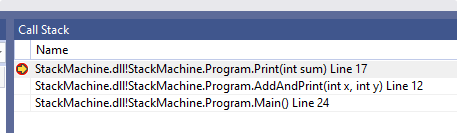
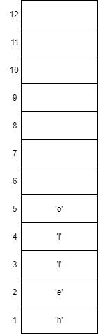
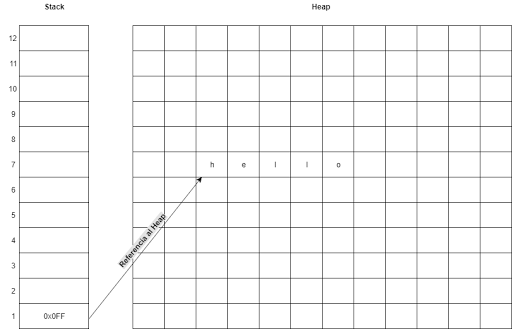
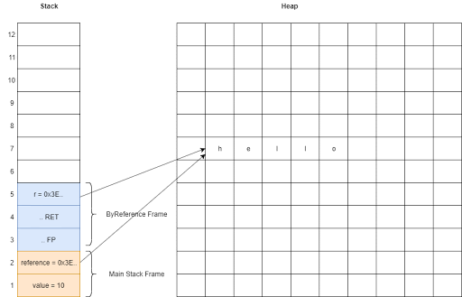
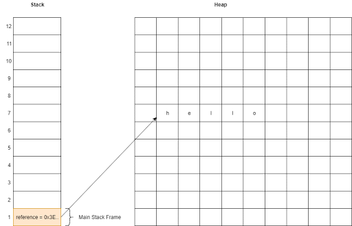

El Stack
Este artículo surgió gracias a mis experimentos con stack machines en C#.
Mejorar el rendimiento y el consumo de memoria es una de las tendencias que vemos en las nuevas versiones de C# (y .NET en general). Desde C# 7.0 se han introducido versiones "Value" de algunas APIs, como por ejemplo:
TaskyValueTaskTupleyValueTupleMemory<T>ySpan<T>
Estos nuevos tipos son de valor y no de referencia, como si representaran un significado especial para el programador. Se explica que un tipo por referencia como Tuple se guarda en el Heap (Memoria), y un tipo por valor como ValueTuple se guarda en el Call Stack, ¿Pero qué ventajas tiene el Stack sobre el Heap ?
Stack
Primero vamos a recordar que es el Stack (sin Call). Podemos pensar en el Stack como un arreglo lineal que sigue 2 reglas. Primero, sólo podemos asignar elementos hasta el final del arreglo, Y Segundo, sólo podemos sacar elementos desde el final. A esto se le conoce como una estructura LIFO (Last In, First Out).

A la instrucción para agregar elementos se le conoce como PUSH y para sacar elementos se le conoce como POP. Estas instrucciones son tan comunes que la mayoría de las arquitecturas de CPU y máquinas virtuales las implementan directamente.
x86 push[t] pop[t]
ARM PUSH POP
CIL ldc. stloc.
El call stack es una región limitada en la memoria que opera bajo las reglas de una pila convencional, utilizada para guardar información sobre la ejecución del programa. A continuación, se presenta un ejemplo que ilustra el funcionamiento del call stack con un programa específico:
void Main()
{
int a = 10;
int b = 20;
Add(a, b);
}
void Add(int x, int y)
{
int z = x + y;
Print(z);
}
void Print(int sum)
{
Console.WriteLine(sum);
}

Cada función que se ejecuta crea una nueva región en el Stack que se llama Stack Frame, la posición inicial de esta región se llama Frame Pointer (FP).
En el nuevo frame se guardan en orden (con PUSH):
- El Frame Pointer de la función anterior.
- Hacia donde debe de Regresar la función actual (posición en código)
- Parámetros (argumentos) de la función.
- Variables locales
Una vez terminada la función se eliminan (con POP) las variables locales, se eliminan los argumentos, se pasa el control a la función anterior en la posición exacta de código, y se apunta el Frame Pointer al FP anterior.
Una de las ventajas del Stack, es que una vez que la función termina, las variables locales son eliminadas automáticamente.
Si examinamos nuestros Stack Frames en el punto donde se llama a Print podemos ver el flujo de ejecución de nuestra aplicación. Esto es muy similar a lo que vemos en Visual Studio cuando estamos debugueando o cuando vemos una excepción

.

Valor y Referencia
En el ejemplo anterior declaramos dos enteros dentro de Main, estos dos valores usaron 2 espacios en nuestro Stack.
int a = 10;
int b = 20;
Los tipos de datos simples como int, float, byte, char, etc, pueden ser almacenados en el Stack sin ningún problema, ya que no requieren mucho espacio. El problema viene cuando queremos almacenar tipos más complejos como string, Pongamos como ejemplo la cadena "hello".
Una cadena es un tipo de dato compuesto por múltiples caracteres ('h','e', 'l', 'l' y 'o'), si guardamos "hello" en nuestro Stack terminaremos con algo parecido a esto:

El tamaño del Stack depende de la arquitectura con la que estamos trabajando y normalmente son tamaños muy pequeños (.NET 1MB, Java 1MB, Linux 8MB). Si todo tipo de información se guardará en el Stack cualquier aplicación podría llenarlo causando algo conocido como Stack Overflow. Este es un tipo de error muy especial, ya que nuestra aplicación ni siquiera tiene espacio en el Stack para poder recuperarse con try/catch.
Estos tipos de datos más complejos normalmente se almacenan en el Heap (Montón), que es lo que nosotros conocemos como Memoria. Cuando algo lo suficientemente grande necesita ser almacenado, primero se almacena en el Heap y la dirección en memoria se almacena en el Stack. A este tipo de dato se le conoce como tipo por referencia.

Los tipos de datos por valor pasan una copia exacta del valor como parámetro a la función en el Stack, esto implica que cuando cambiamos la variable solo modificamos la copia. En cambio con los tipos de datos por referencia pasamos una dirección de memoria, así que cuando cambiamos el valor del parámetro también cambiamos la variable original.
void Main()
{
int value = 10;
string reference = "hello";
ByValue(value);
ByReference(reference);
}
void ByValue(int v)
{
Console.WriteLine(v);
}
void ByReference(string r)
{
Console.WriteLine(r);
}

Heap y GC
Si el Stack es tan limitado y el Heap nos permite almacenar todo lo que queramos, ¿por qué no simplemente almacenar todo en el Heap y dejar en el Stack solo la información que sirve para la ejecución del programa? Sencillo, por qué almacenar y borrar en un lugar tan grande de memoria es más lento y complicado.
Dependiendo del lenguaje que usemos podemos manejar memoria en el Heap manualmente (C malloc/free, C++ new/delete) o automáticamente (C#/Java new). Si la manejamos manualmente y no tenemos cuidado podemos introducir leaks de memoria en nuestra aplicación, lo mejor es dejar que el lenguaje nos ayude a manejar la memoria, esto se hace por medio de algo llamado Garbage Collection.
Hay muchas implementaciones de un Garbage Collector (ref count, mark and sweep, generational) pero podemos tratar de razonar acerca de cómo funciona con lo que sabemos del Stack. el trabajo de un GC es liberar los valores creados en el Heap que ya no están en uso en nuestra aplicación, ¿donde se guardan las referencias al Heap en nuestra aplicación? pues en el Stack. podríamos crear un algoritmo para analizar el Stack y compararlo con lo que hay en el Heap, esto nos permitirá de una manera muy ingenua implementar un GC.
void Main()
{
string reference = "hello";
CreateGarbage();
//nada apunta a la cadena "GARBAGE" dentro de CreateGarbage ahora
//pero aun tenemos una variable que apunta a "hello"
}
void CreateGarbage()
{
string value = "GARBAGE";
}

El tiempo en el que el GC se ejecuta, no es gratuito. En este momento la aplicación se debe de detener y dedicarle tiempo al GC para liberar memoria, Hay casos en los que un GC puede ser más rápido que el manejo de memoria manual pero por lo regular este no es el caso.
Concluyendo con el Heap, si sabemos que la vida de la variable acaba cuando la función sale, entonces lo más eficiente es meterlo al Stack. Si no, entonces al Heap. El GC es un tema muy complicado que me gustaria tocar mas a fondo en otro artículo.
Temas a Futuro
.NET tiene algunas peculiaridades en el manejo de memoria que me gustaria abordar en otro articulo.
- Se puede pasar un tipo de valor por referencia, pero solo hacia adelante
- Struct son por valor, Clases por Referencia. pero existen clases por referencia.
- Los
ReadOnlyStructson casos muy especiales en el manejo de memoria new int[]ystackallocpermiten almacenar de manera dinamica informacion en el stack.- La recursividad y el tail call elimination
[^1] Heap: Lo que nosotros conocemos como memoria, es donde toda la memoria dinámica es reservada manualmente (usando malloc en C) o automáticamente (con new en C#).